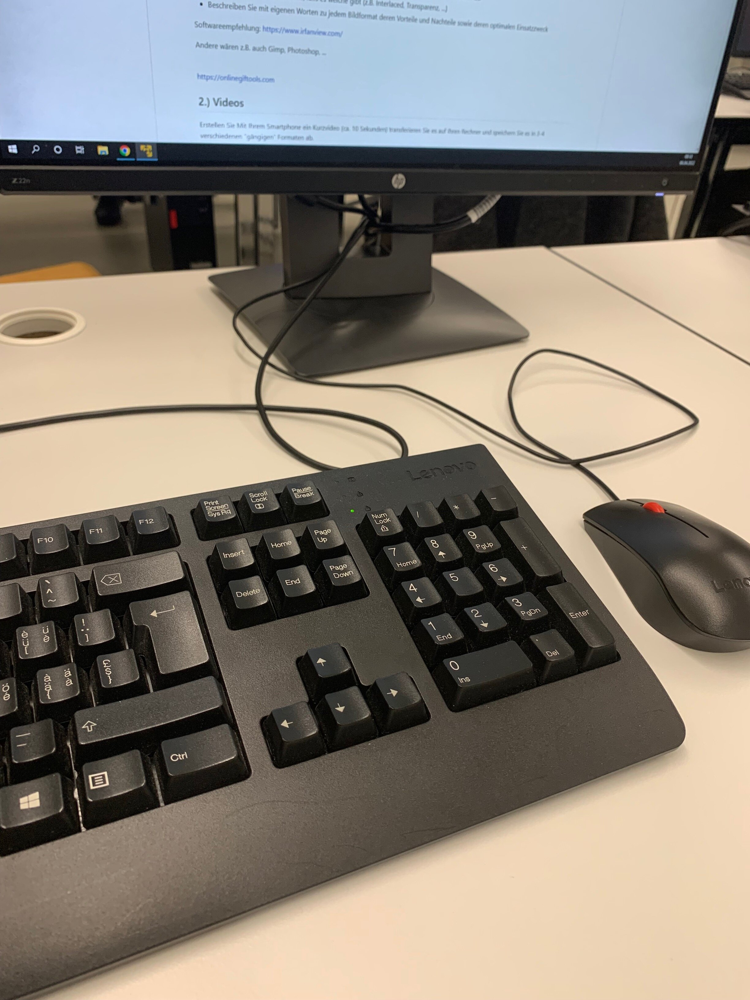
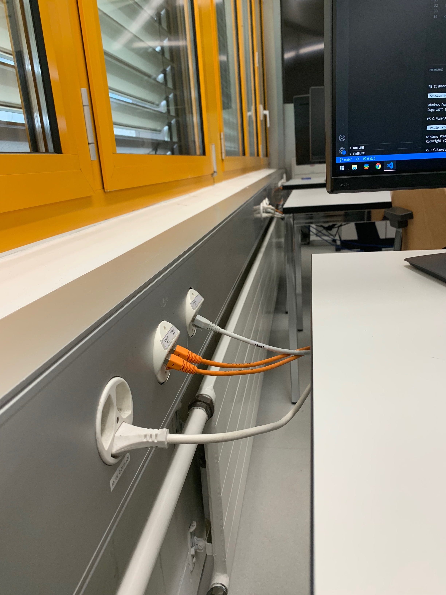
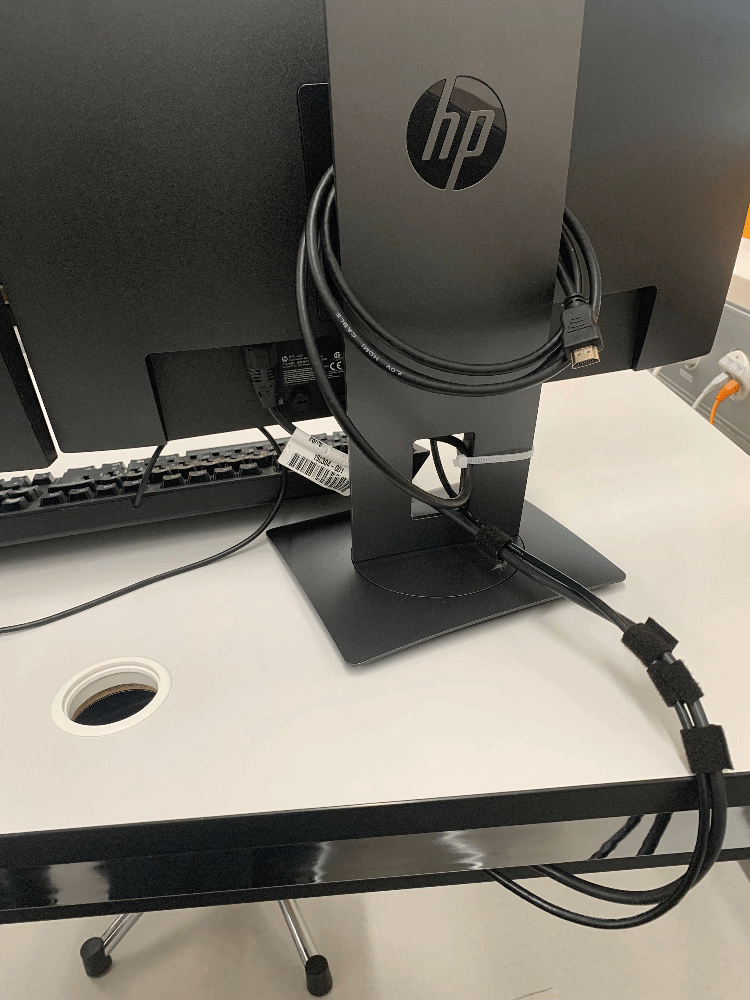

Dateigrösse: 913KB
JPG ist für eine grosse Farbbreite + Qualität und eine kleine Dateigrösse bekannt.
Die kleine Dateigrösse wird durch Informationenverlust erziehlt, deswegen muss bei JPG immer eine Qualität angegeben werden.
Wird oft im Internet eingesetzt, als ersatz dienen oft verlustfreie Dateiformate wie TIFF
+ Hohe Bildqualtität
+ Grosses Farbspektrum
- Verlustbasierte Kompression
- Unterstützt keine Animationen
Tastatur in Kassenzimmer BBZW-Sursee, von Fabian Müller
Dateigrösse: 1.05MB
PNG ist eine verlustfreies Dateiformat. Dabei wird mit einem Raster die Bildauflösung festgelegt.
Durch die verlustfreie Speichermethode sind PNG-Dateien grösser als vergleichbare JPGs.
+ Verlustfreie Kompression
+ Grosses Farbspektrum
- Grosse Dateigrösse
- Unterstützt keine Animationen
Steckdose in Kassenzimmer BBZW-Sursee, von Fabian Müller
Dateigrösse: 3.49MB
Ein GIF verknüft mehrere BITmap-Grafikdateien zu einem animierten Bild.
Da GIF somit eine Reihenfolge von Bildern ist, kann GIF nur 256 Farben darstellen und hat in der Regel eine niederige Auflösung.
Trotz der tiefen Auflösung und wenigen Farben hat ein GIF eine vergleichbar grosse Dateigrösse, da es sich genaugenommen um mehrere Bilder handelt.
+ Unterstützt Animationen
+ Für Kurzfilme kleine Dateigrösse
- Kleines Farbspektrum
- Kann nach erstellung nicht mehr editiert werden
Monitor in Kassenzimmer BBZW-Sursee, von Fabian Müller